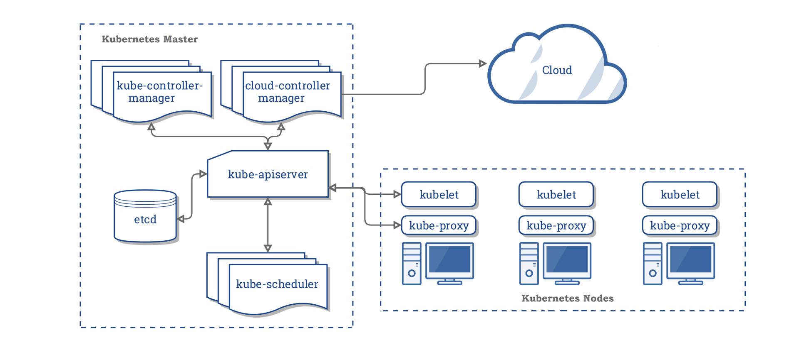
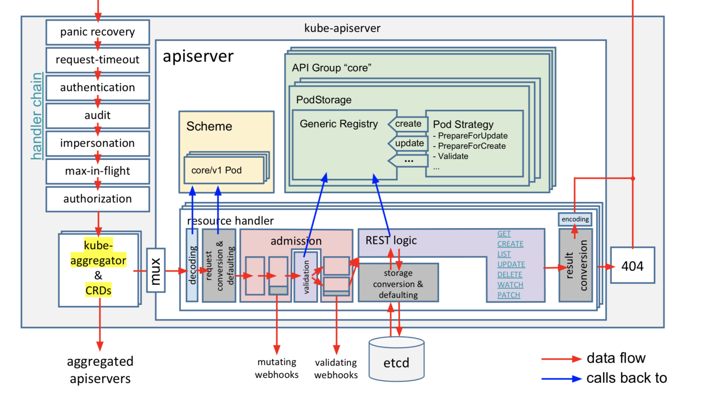
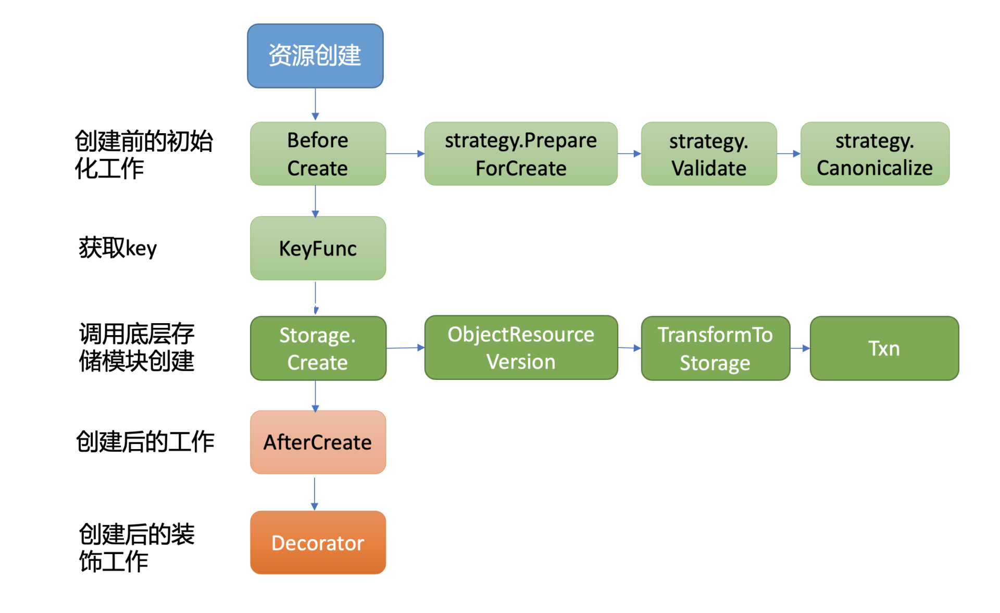
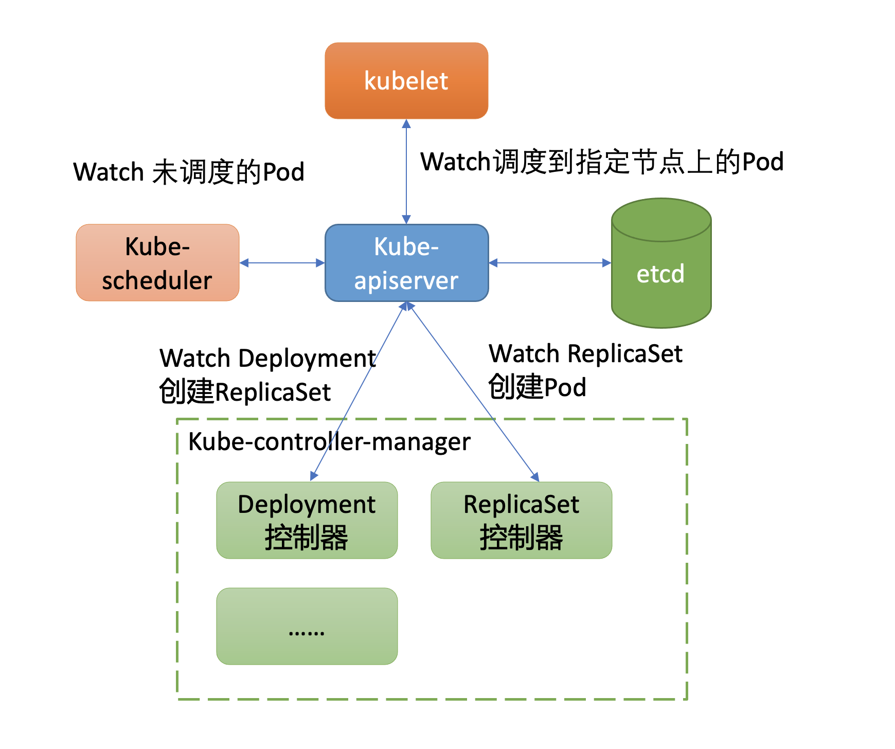

- 00 开篇词 为什么你要学习etcd_.md.html
- 01 etcd的前世今生：为什么Kubernetes使用etcd？.md.html
- 02 基础架构：etcd一个读请求是如何执行的？.md.html
- 03 基础架构：etcd一个写请求是如何执行的？.md.html
- 04 Raft协议：etcd如何实现高可用、数据强一致的？.md.html
- 05 鉴权：如何保护你的数据安全？.md.html
- 06 租约：如何检测你的客户端存活？.md.html
- 07 MVCC：如何实现多版本并发控制？.md.html
- 08 Watch：如何高效获取数据变化通知？.md.html
- 09 事务：如何安全地实现多key操作？.md.html
- 10 boltdb：如何持久化存储你的key-value数据？.md.html
- 11 压缩：如何回收旧版本数据？.md.html
- 12 一致性：为什么基于Raft实现的etcd还会出现数据不一致？.md.html
- 13 db大小：为什么etcd社区建议db大小不超过8G？.md.html
- 14 延时：为什么你的etcd请求会出现超时？.md.html
- 15 内存：为什么你的etcd内存占用那么高？.md.html
- 16 性能及稳定性（上）：如何优化及扩展etcd性能？.md.html
- 17 性能及稳定性（下）：如何优化及扩展etcd性能_.md.html
- 18 实战：如何基于Raft从0到1构建一个支持多存储引擎分布式KV服务？.md.html
- 19 Kubernetes基础应用：创建一个Pod背后etcd发生了什么？.md.html
- 20 Kubernetes高级应用：如何优化业务场景使etcd能支撑上万节点集群？.md.html
- 21 分布式锁：为什么基于etcd实现分布式锁比Redis锁更安全？.md.html
- 22 配置及服务发现：解析etcd在API Gateway开源项目中应用.md.html
- 23 选型：etcd_ZooKeeper_Consul等我们该如何选择？.md.html
- 24 运维：如何构建高可靠的etcd集群运维体系？.md.html
- 特别放送 成员变更：为什么集群看起来正常，移除节点却会失败呢？.md.html
- 结束语 搞懂etcd，掌握通往分布式存储系统之门的钥匙.md.html
- 捐赠
19 Kubernetes基础应用：创建一个Pod背后etcd发生了什么？
你好，我是唐聪。
今天我将通过在Kubernetes集群中创建一个Pod的案例，为你分析etcd在其中发挥的作用，带你深入了解Kubernetes是如何使用etcd的。
希望通过本节课，帮助你从etcd的角度更深入理解Kubernetes，让你知道在Kubernetes集群中每一步操作的背后，etcd会发生什么。更进一步，当你在Kubernetes集群中遇到etcd相关错误的时候，能从etcd角度理解错误含义，高效进行故障诊断。
Kubernetes基础架构
在带你详细了解etcd在Kubernetes里的应用之前，我先和你简单介绍下Kubernetes集群的整体架构，帮你搞清楚etcd在Kubernetes集群中扮演的角色与作用。
下图是Kubernetes集群的架构图（引用自Kubernetes官方文档），从图中你可以看到，它由Master节点和Node节点组成。

控制面Master节点主要包含以下组件：
- kube-apiserver，负责对外提供集群各类资源的增删改查及Watch接口，它是Kubernetes集群中各组件数据交互和通信的枢纽。kube-apiserver在设计上可水平扩展，高可用Kubernetes集群中一般多副本部署。当收到一个创建Pod写请求时，它的基本流程是对请求进行认证、限速、授权、准入机制等检查后，写入到etcd即可。
- kube-scheduler是调度器组件，负责集群Pod的调度。基本原理是通过监听kube-apiserver获取待调度的Pod，然后基于一系列筛选和评优算法，为Pod分配最佳的Node节点。
- kube-controller-manager包含一系列的控制器组件，比如Deployment、StatefulSet等控制器。控制器的核心思想是监听、比较资源实际状态与期望状态是否一致，若不一致则进行协调工作使其最终一致。
- etcd组件，Kubernetes的元数据存储。
Node节点主要包含以下组件：
- kubelet，部署在每个节点上的Agent的组件，负责Pod的创建运行。基本原理是通过监听APIServer获取分配到其节点上的Pod，然后根据Pod的规格详情，调用运行时组件创建pause和业务容器等。
- kube-proxy，部署在每个节点上的网络代理组件。基本原理是通过监听APIServer获取Service、Endpoint等资源，基于Iptables、IPVS等技术实现数据包转发等功能。
从Kubernetes基础架构介绍中你可以看到，kube-apiserver是唯一直接与etcd打交道的组件，各组件都通过kube-apiserver实现数据交互，它们极度依赖kube-apiserver提供的资源变化监听机制。而kube-apiserver对外提供的监听机制，也正是由我们基础篇08中介绍的etcd Watch特性提供的底层支持。
创建Pod案例
接下来我们就以在Kubernetes集群中创建一个nginx服务为例，通过这个案例来详细分析etcd在Kubernetes集群创建Pod背后是如何工作的。
下面是创建一个nginx服务的YAML文件，Workload是Deployment，期望的副本数是1。
apiVersion: apps/v1
kind: Deployment
metadata:
name: nginx-deployment
labels:
app: nginx
spec:
replicas: 1
selector:
matchLabels:
app: nginx
template:
metadata:
labels:
app: nginx
spec:
containers:
- name: nginx
image: nginx:1.14.2
ports:
- containerPort: 80
假设此YAML文件名为nginx.yaml，首先我们通过如下的kubectl create -f nginx.yml命令创建Deployment资源。
$ kubectl create -f nginx.yml
deployment.apps/nginx-deployment created
创建之后，我们立刻通过如下命令，带标签查询Pod，输出如下：
$ kubectl get po -l app=nginx
NAME READY STATUS RESTARTS AGE
nginx-deployment-756d9fd5f9-fkqnf 1/1 Running 0 8s
那么在kubectl create命令发出，nginx Deployment资源成功创建的背后，kube-apiserver是如何与etcd打交道的呢？ 它是通过什么接口安全写入资源到etcd的？
同时，使用kubectl带标签查询Pod背后，kube-apiserver是直接从缓存读取还是向etcd发出一个线性读或串行读请求呢？ 若同namespace下存在大量的Pod，此操作性能又是怎样的呢?
接下来我就和你聊聊kube-apiserver收到创建和查询请求后，是如何与etcd交互的。
kube-apiserver请求执行链路
kube-apiserver作为Kubernetes集群交互的枢纽、对外提供API供用户访问的组件，因此保障集群安全、保障本身及后端etcd的稳定性的等重任也是非它莫属。比如校验创建请求发起者是否合法、是否有权限操作相关资源、是否出现Bug产生大量写和读请求等。
下图是kube-apiserver的请求执行链路（引用自sttts分享的PDF），当收到一个请求后，它主要经过以下处理链路来完成以上若干职责后，才能与etcd交互。
核心链路如下：
- 认证模块，校验发起的请求的用户身份是否合法。支持多种方式，比如x509客户端证书认证、静态token认证、webhook认证等。
- 限速模块，对请求进行简单的限速，默认读400/s写200/s，不支持根据请求类型进行分类、按优先级限速，存在较多问题。Kubernetes 1.19后已新增Priority and Fairness特性取代它，它支持将请求重要程度分类进行限速，支持多租户，可有效保障Leader选举之类的高优先级请求得到及时响应，能防止一个异常client导致整个集群被限速。
- 审计模块，可记录用户对资源的详细操作行为。
- 授权模块，检查用户是否有权限对其访问的资源进行相关操作。支持多种方式，RBAC(Role-based access control)、ABAC(Attribute-based access control)、Webhhook等。Kubernetes 1.12版本后，默认授权机制使用的RBAC。
- 准入控制模块，提供在访问资源前拦截请求的静态和动态扩展能力，比如要求镜像的拉取策略始终为AlwaysPullImages。

经过上面一系列的模块检查后，这时kube-apiserver就开始与etcd打交道了。在了解kube-apiserver如何将我们创建的Deployment资源写入到etcd前，我先和你介绍下Kubernetes的资源是如何组织、存储在etcd中。
Kubernetes资源存储格式
我们知道etcd仅仅是个key-value存储，但是在Kubernetes中存在各种各样的资源，并提供了以下几种灵活的资源查询方式：
- 按具体资源名称查询，比如PodName、kubectl get po/PodName。
- 按namespace查询，获取一个namespace下的所有Pod，比如kubectl get po -n kube-system。
- 按标签名，标签是极度灵活的一种方式，你可以为你的Kubernetes资源打上各种各样的标签，比如上面案例中的kubectl get po -l app=nginx。
你知道以上这几种查询方式它们的性能优劣吗？假设你是Kubernetes开发者，你会如何设计存储格式来满足以上功能点？
首先是按具体资源名称查询。它本质就是个key-value查询，只需要写入etcd的key名称与资源key一致即可。
其次是按namespace查询。这种查询也并不难。因为我们知道etcd支持范围查询，若key名称前缀包含namespace、资源类型，查询的时候指定namespace和资源类型的组合的最小开始区间、最大结束区间即可。
最后是标签名查询。这种查询方式非常灵活，业务可随时添加、删除标签，各种标签可相互组合。实现标签查询的办法主要有以下两种：
- 方案一，在etcd中存储标签数据，实现通过标签可快速定位（时间复杂度O(1)）到具体资源名称。然而一个标签可能容易实现，但是在Kubernetes集群中，它支持按各个标签组合查询，各个标签组合后的数量相当庞大。在etcd中维护各种标签组合对应的资源列表，会显著增加kube-apiserver的实现复杂度，导致更频繁的etcd写入。
- 方案二，在etcd中不存储标签数据，而是由kube-apiserver通过范围遍历etcd获取原始数据，然后基于用户指定标签，来筛选符合条件的资源返回给client。此方案优点是实现简单，但是大量标签查询可能会导致etcd大流量等异常情况发生。
那么Kubernetes集群选择的是哪种实现方式呢?
下面是一个Kubernetes集群中的coredns一系列资源在etcd中的存储格式：
/registry/clusterrolebindings/system:coredns
/registry/clusterroles/system:coredns
/registry/configmaps/kube-system/coredns
/registry/deployments/kube-system/coredns
/registry/events/kube-system/coredns-7fcc6d65dc-6njlg.1662c287aabf742b
/registry/events/kube-system/coredns-7fcc6d65dc-6njlg.1662c288232143ae
/registry/pods/kube-system/coredns-7fcc6d65dc-jvj26
/registry/pods/kube-system/coredns-7fcc6d65dc-mgvtb
/registry/pods/kube-system/coredns-7fcc6d65dc-whzq9
/registry/replicasets/kube-system/coredns-7fcc6d65dc
/registry/secrets/kube-system/coredns-token-hpqbt
/registry/serviceaccounts/kube-system/coredns
从中你可以看到，一方面Kubernetes资源在etcd中的存储格式由prefix + “/” + 资源类型 + “/” + namespace + “/” + 具体资源名组成，基于etcd提供的范围查询能力，非常简单地支持了按具体资源名称查询和namespace查询。
kube-apiserver提供了如下参数给你配置etcd prefix，并支持将资源存储在多个etcd集群。
--etcd-prefix string Default: "/registry"
The prefix to prepend to all resource paths in etcd.
--etcd-servers stringSlice
List of etcd servers to connect with (scheme://ip:port), comma separated.
--etcd-servers-overrides stringSlice
Per-resource etcd servers overrides, comma separated. The individual override format: group/resource#servers, where servers are URLs,
semicolon separated.
另一方面，我们未看到任何标签相关的key。Kubernetes实现标签查询的方式显然是方案二，即由kube-apiserver通过范围遍历etcd获取原始数据，然后基于用户指定标签，来筛选符合条件的资源返回给client（资源key的value中记录了资源YAML文件内容等，如标签）。
也就是当你执行”kubectl get po -l app=nginx”命令，按标签查询Pod时，它会向etcd发起一个范围遍历整个default namespace下的Pod操作。
$ kubectl get po -l app=nginx -v 8
I0301 23:45:25.597465 32411 loader.go:359] Config loaded from file /root/.kube/config
I0301 23:45:25.603182 32411 round_trippers.go:416] GET https://ip:port/api/v1/namespaces/default/pods?
labelSelector=app%3Dnginx&limit=500
etcd收到的请求日志如下，由此可见当一个namespace存在大量Pod等资源时，若频繁通过kubectl，使用标签查询Pod等资源，后端etcd将出现较大的压力。
{
"level":"debug",
"ts":"2021-03-01T23:45:25.609+0800",
"caller":"v3rpc/interceptor.go:181",
"msg":"request stats",
"start time":"2021-03-01T23:45:25.608+0800",
"time spent":"1.414135ms",
"remote":"127.0.0.1:44664",
"response type":"/etcdserverpb.KV/Range",
"request count":0,
"request size":61,
"response count":11,
"response size":81478,
"request content":"key:"/registry/pods/default/" range_end:"/registry/pods/default0" limit:500 "
}
了解完Kubernetes资源的存储格式后，我们再看看nginx Deployment资源是如何由kube-apiserver写入etcd的。
通用存储模块
kube-apiserver启动的时候，会将每个资源的APIGroup、Version、Resource Handler注册到路由上。当请求经过认证、限速、授权、准入控制模块检查后，请求就会被转发到对应的资源逻辑进行处理。
同时，kube-apiserver实现了类似数据库ORM机制的通用资源存储机制，提供了对一个资源创建、更新、删除前后的hook能力，将其封装成策略接口。当你新增一个资源时，你只需要编写相应的创建、更新、删除等策略即可，不需要写任何etcd的API。
下面是kube-apiserver通用存储模块的创建流程图：

从图中你可以看到，创建一个资源主要由BeforeCreate、Storage.Create以及AfterCreate三大步骤组成。
当收到创建nginx Deployment请求后，通用存储模块首先会回调各个资源自定义实现的BeforeCreate策略，为资源写入etcd做一些初始化工作。
下面是Deployment资源的创建策略实现，它会进行将deployment.Generation设置为1等操作。
// PrepareForCreate clears fields that are not allowed to be set by end users on creation.
func (deploymentStrategy) PrepareForCreate(ctx context.Context, obj runtime.Object) {
deployment := obj.(*apps.Deployment)
deployment.Status = apps.DeploymentStatus{}
deployment.Generation = 1
pod.DropDisabledTemplateFields(&deployment.Spec.Template, nil)
}
执行完BeforeCreate策略后，它就会执行Storage.Create接口，也就是由它真正开始调用底层存储模块etcd3，将nginx Deployment资源对象写入etcd。
那么Kubernetes是使用etcd Put接口写入资源key-value的吗？如果是，那要如何防止同名资源并发创建被覆盖的问题？
资源安全创建及更新
我们知道etcd提供了Put和Txn接口给业务添加key-value数据，但是Put接口在并发场景下若收到key相同的资源创建，就会导致被覆盖。
因此Kubernetes很显然无法直接通过etcd Put接口来写入数据。
而我们09节中介绍的etcd事务接口Txn，它正是为了多key原子更新、并发操作安全性等而诞生的，它提供了丰富的冲突检查机制。
Kubernetes集群使用的正是事务Txn接口来防止并发创建、更新被覆盖等问题。当执行完BeforeCreate策略后，这时kube-apiserver就会调用Storage的模块的Create接口写入资源。1.6版本后的Kubernete集群默认使用的存储是etcd3，它的创建接口简要实现如下：
// Create implements storage.Interface.Create.
func (s *store) Create(ctx context.Context, key string, obj, out runtime.Object, ttl uint64) error {
......
key = path.Join(s.pathPrefix, key)
opts, err := s.ttlOpts(ctx, int64(ttl))
if err != nil {
return err
}
newData, err := s.transformer.TransformToStorage(data, authenticatedDataString(key))
if err != nil {
return storage.NewInternalError(err.Error())
}
startTime := time.Now()
txnResp, err := s.client.KV.Txn(ctx).If(
notFound(key),
).Then(
clientv3.OpPut(key, string(newData), opts...),
).Commit
从上面的代码片段中，我们可以得出首先它会按照我们介绍的Kubernetes资源存储格式拼接key。
然后若TTL非0，它会根据TTL从leaseManager获取可复用的Lease ID。Kubernetes集群默认若不同key（如Kubernetes的Event资源对象）的TTL差异在1分钟内，可复用同一个Lease ID，避免大量Lease影响etcd性能和稳定性。
其次若开启了数据加密，在写入etcd前数据还将按加密算法进行转换工作。
最后就是使用etcd的Txn接口，向etcd发起一个创建deployment资源的Txn请求。
那么etcd收到kube-apiserver的请求是长什么样子的呢？
下面是etcd收到创建nginx deployment资源的请求日志：
{
"level":"debug",
"ts":"2021-02-11T09:55:45.914+0800",
"caller":"v3rpc/interceptor.go:181",
"msg":"request stats",
"start time":"2021-02-11T09:55:45.911+0800",
"time spent":"2.697925ms",
"remote":"127.0.0.1:44822",
"response type":"/etcdserverpb.KV/Txn",
"request count":1,
"request size":479,
"response count":0,
"response size":44,
"request content":"compare:<target:MOD key:"/registry/deployments/default/nginx-deployment" mod_revision:0 > success:<request_put:<key:"/registry/deployments/default/nginx-deployment" value_size:421 >> failure:<>"
}
从这个请求日志中，你可以得到以下信息：
- 请求的模块和接口，KV/Txn；
- key路径，/registry/deployments/default/nginx-deployment，由prefix + “/” + 资源类型 + “/” + namespace + “/” + 具体资源名组成；
- 安全的并发创建检查机制，mod_revision为0时，也就是此key不存在时，才允许执行put更新操作。
通过Txn接口成功将数据写入到etcd后，kubectl create -f nginx.yml命令就执行完毕，返回给client了。在以上介绍中你可以看到，kube-apiserver并没有任何逻辑去真正创建Pod，但是为什么我们可以马上通过kubectl get命令查询到新建并成功运行的Pod呢？
这就涉及到了基础架构图中的控制器、调度器、Kubelet等组件。下面我就为你浅析它们是如何基于etcd提供的Watch机制工作，最终实现创建Pod、调度Pod、运行Pod的。
Watch机制在Kubernetes中应用
正如我们基础架构中所介绍的，kube-controller-manager组件中包含一系列WorkLoad的控制器。Deployment资源就由其中的Deployment控制器来负责的，那么它又是如何感知到新建Deployment资源，最终驱动ReplicaSet控制器创建出Pod的呢？
获取数据变化的方案，主要有轮询和推送两种方案组成。轮询会产生大量expensive request，并且存在高延时。而etcd Watch机制提供的流式推送能力，赋予了kube-apiserver对外提供数据监听能力。
我们知道在etcd中版本号是个逻辑时钟，随着client对etcd的增、删、改操作而全局递增，它被广泛应用在MVCC、事务、Watch特性中。
尤其是在Watch特性中，版本号是数据增量同步的核心。当client因网络等异常出现连接闪断后，它就可以通过版本号从etcd server中快速获取异常后的事件，无需全量同步。
那么在Kubernetes集群中，它提供了什么概念来实现增量监听逻辑呢？
答案是Resource Version。
Resource Version与etcd版本号
Resource Version是Kubernetes API中非常重要的一个概念，顾名思义，它是一个Kubernetes资源的内部版本字符串，client可通过它来判断资源是否发生了变化。同时，你可以在Get、List、Watch接口中，通过指定Resource Version值来满足你对数据一致性、高性能等诉求。
那么Resource Version有哪些值呢？跟etcd版本号是什么关系？
下面我分别以Get和Watch接口中的Resource Version参数值为例，为你剖析它与etcd的关系。
在Get请求查询案例中，ResourceVersion主要有以下这三种取值：
第一种是未指定ResourceVersion，默认空字符串。kube-apiserver收到一个此类型的读请求后，它会向etcd发出共识读/线性读请求获取etcd集群最新的数据。
第二种是设置ResourceVersion=“0”，赋值字符串0。kube-apiserver收到此类请求时，它可能会返回任意资源版本号的数据，但是优先返回较新版本。一般情况下它直接从kube-apiserver缓存中获取数据返回给client，有可能读到过期的数据，适用于对数据一致性要求不高的场景。
第三种是设置ResourceVersion为一个非0的字符串。kube-apiserver收到此类请求时，它会保证Cache中的最新ResourceVersion大于等于你传入的ResourceVersion，然后从Cache中查找你请求的资源对象key，返回数据给client。基本原理是kube-apiserver为各个核心资源（如Pod）维护了一个Cache，通过etcd的Watch机制来实时更新Cache。当你的Get请求中携带了非0的ResourceVersion，它会等待缓存中最新ResourceVersion大于等于你Get请求中的ResoureVersion，若满足条件则从Cache中查询数据，返回给client。若不满足条件，它最多等待3秒，若超过3秒，Cache中的最新ResourceVersion还小于Get请求中的ResourceVersion，就会返回ResourceVersionTooLarge错误给client。
你要注意的是，若你使用的Get接口，那么kube-apiserver会取资源key的ModRevision字段填充Kubernetes资源的ResourceVersion字段（v1.meta/ObjectMeta.ResourceVersion）。若你使用的是List接口，kube-apiserver会在查询时，使用etcd当前版本号填充ListMeta.ResourceVersion字段（v1.meta/ListMeta.ResourceVersion）。
那么当我们执行kubectl get po查询案例时，它的ResouceVersion是什么取值呢? 查询的是kube-apiserver缓存还是etcd最新共识数据?
如下所示，你可以通过指定kubectl日志级别为6，观察它向kube-apiserver发出的请求参数。从下面请求日志里你可以看到，默认是未指定Resource Version，也就是会发出一个共识读/线性读请求给etcd，获取etcd最新共识数据。
kubectl get po -l app=nginx -v 6
4410 loader.go:359] Config loaded from file /root/.kube/config
4410 round_trippers.go:438] GET https://*.*.*.*:*/api/v1/namespaces/default/pods?labelSelector=app%3Dnginx&limit=500 200 OK in 8 milliseconds
这里要提醒下你，在规模较大的集群中，尽量不要使用kubectl频繁查询资源。正如我们上面所分析的，它会直接查询etcd数据，可能会产生大量的expensive request请求，之前我就有见过业务这样用，然后导致了集群不稳定。
介绍完查询案例后，我们再看看Watch案例中，它的不同取值含义是怎样的呢?
它同样含有查询案例中的三种取值，官方定义的含义分别如下：
- 未指定ResourceVersion，默认空字符串。一方面为了帮助client建立初始状态，它会将当前已存在的资源通过Add事件返回给client。另一方面，它会从etcd当前版本号开始监听，后续新增写请求导致数据变化时可及时推送给client。
- 设置ResourceVersion=“0”，赋值字符串0。它同样会帮助client建立初始状态，但是它会从任意版本号开始监听（当前kube-apiserver的实现指定ResourceVersion=0和不指定行为一致，在获取初始状态后，都会从cache最新的ResourceVersion开始监听），这种场景可能会导致集群返回陈旧的数据。
- 设置ResourceVersion为一个非0的字符串。从精确的版本号开始监听数据，它只会返回大于等于精确版本号的变更事件。
Kubernetes的控制器组件就基于以上的Watch特性，在快速感知到新建Deployment资源后，进入一致性协调逻辑，创建ReplicaSet控制器，整体交互流程如下所示。

Deployment控制器创建ReplicaSet资源对象的日志如下所示。
{
"level":"debug",
"ts":"2021-02-11T09:55:45.923+0800",
"caller":"v3rpc/interceptor.go:181",
"msg":"request stats",
"start time":"2021-02-11T09:55:45.917+0800",
"time spent":"5.922089ms",
"remote":"127.0.0.1:44828",
"response type":"/etcdserverpb.KV/Txn",
"request count":1,
"request size":766,
"response count":0,
"response size":44,
"request content":"compare:<target:MOD key:"/registry/replicasets/default/nginx-deployment-756d9fd5f9" mod_revision:0 > success:<request_put:<key:"/registry/replicasets/default/nginx-deployment-756d9fd5f9" value_size:697 >> failure:<>"
}
真正创建Pod则是由ReplicaSet控制器负责，它同样基于Watch机制感知到新的RS资源创建后，发起请求创建Pod，确保实际运行Pod数与期望一致。
{
"level":"debug",
"ts":"2021-02-11T09:55:46.023+0800",
"caller":"v3rpc/interceptor.go:181",
"msg":"request stats",
"start time":"2021-02-11T09:55:46.019+0800",
"time spent":"3.519326ms",
"remote":"127.0.0.1:44664",
"response type":"/etcdserverpb.KV/Txn",
"request count":1,
"request size":822,
"response count":0,
"response size":44,
"request content":"compare:<target:MOD key:"/registry/pods/default/nginx-deployment-756d9fd5f9-x6r6q" mod_revision:0 > success:<request_put:<key:"/registry/pods/default/nginx-deployment-756d9fd5f9-x6r6q" value_size:754 >> failure:<>"
}
在这过程中也产生了若干Event，下面是etcd收到新增Events资源的请求，你可以看到Event事件key关联了Lease，这个Lease正是由我上面所介绍的leaseManager所负责创建。
{
"level":"debug",
"ts":"2021-02-11T09:55:45.930+0800",
"caller":"v3rpc/interceptor.go:181",
"msg":"request stats",
"start time":"2021-02-11T09:55:45.926+0800",
"time spent":"3.259966ms",
"remote":"127.0.0.1:44632",
"response type":"/etcdserverpb.KV/Txn",
"request count":1,
"request size":449,
"response count":0,
"response size":44,
"request content":"compare:<target:MOD key:"/registry/events/default/nginx-deployment.16628eb9f79e0ab0" mod_revision:0 > success:<request_put:<key:"/registry/events/default/nginx-deployment.16628eb9f79e0ab0" value_size:369 lease:5772338802590698925 >> failure:<>"
}
Pod创建出来后，这时kube-scheduler监听到待调度的Pod，于是为其分配Node，通过kube-apiserver的Bind接口，将调度后的节点IP绑定到Pod资源上。kubelet通过同样的Watch机制感知到新建的Pod后，发起Pod创建流程即可。
以上就是当我们在Kubernetes集群中创建一个Pod后，Kubernetes和etcd之间交互的简要分析。
小结
最后我们来小结下今天的内容。我通过一个创建Pod案例，首先为你解读了Kubernetes集群的etcd存储格式，每个资源的保存路径为prefix + “/” + 资源类型 + “/” + namespace + “/” + 具体资源名组成。结合etcd3的范围查询，可快速实现按namesapace、资源名称查询。按标签查询则是通过kube-apiserver遍历指定namespace下的资源实现的，若未从kube-apiserver的Cache中查询，请求较频繁，很可能导致etcd流量较大，出现不稳定。
随后我和你介绍了kube-apiserver的通用存储模块，它通过在创建、查询、删除、更新操作前增加一系列的Hook机制，实现了新增任意资源只需编写相应的Hook策略即可。我还重点和你介绍了创建接口，它主要由拼接key、获取Lease ID、数据转换、写入etcd组成，重点是它通过使用事务接口实现了资源的安全创建及更新。
最后我给你讲解了Resoure Version在Kubernetes集群中的大量应用，重点和你分析了Get和Watch请求案例中的Resource Version含义，帮助你了解Resource Version本质，让你能根据业务场景和对一致性的容忍度，正确的使用Resource Version以满足业务诉求。
思考题
我还给你留了一个思考题，有哪些原因可能会导致kube-apiserver报“too old Resource Version”错误呢？
感谢你的阅读，如果你认为这节课的内容有收获，也欢迎把它分享给你的朋友，谢谢。
© 2019 - 2023 Liangliang Lee. Powered by gin and hexo-theme-book.